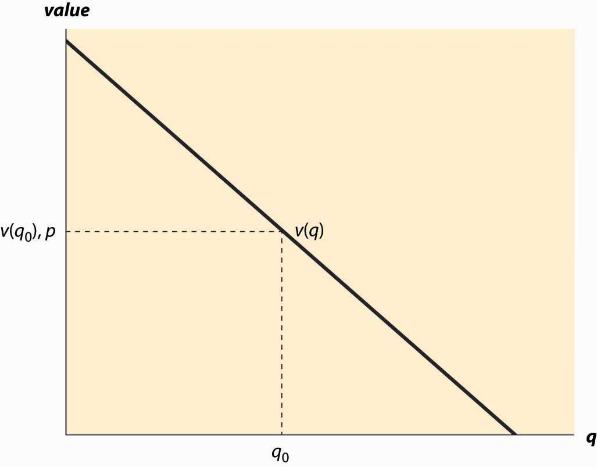
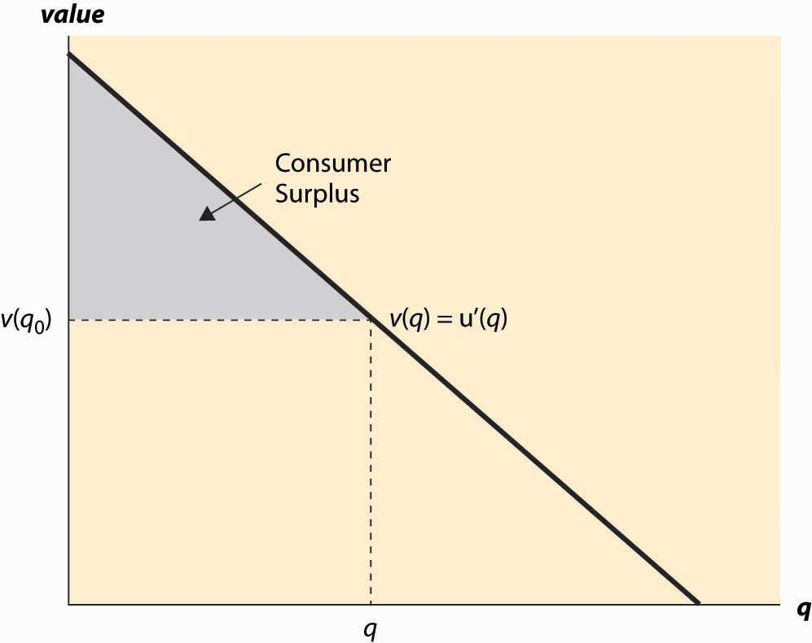
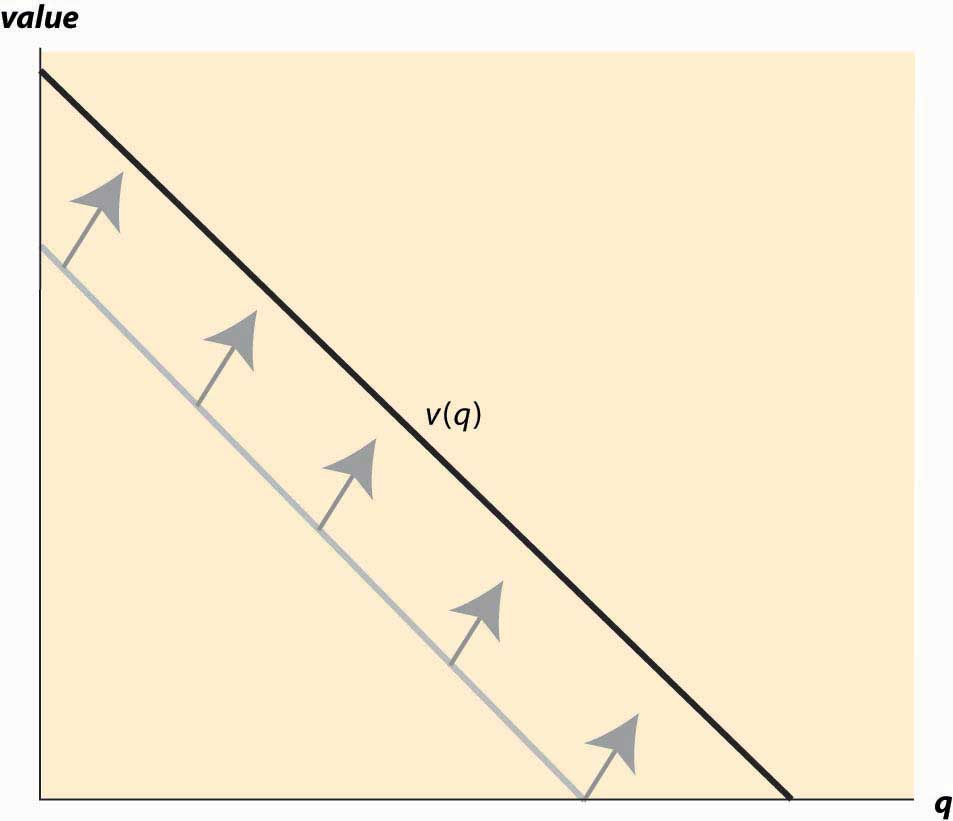
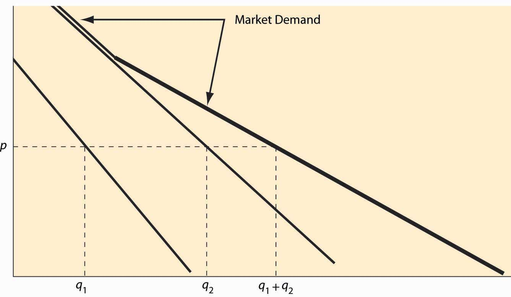
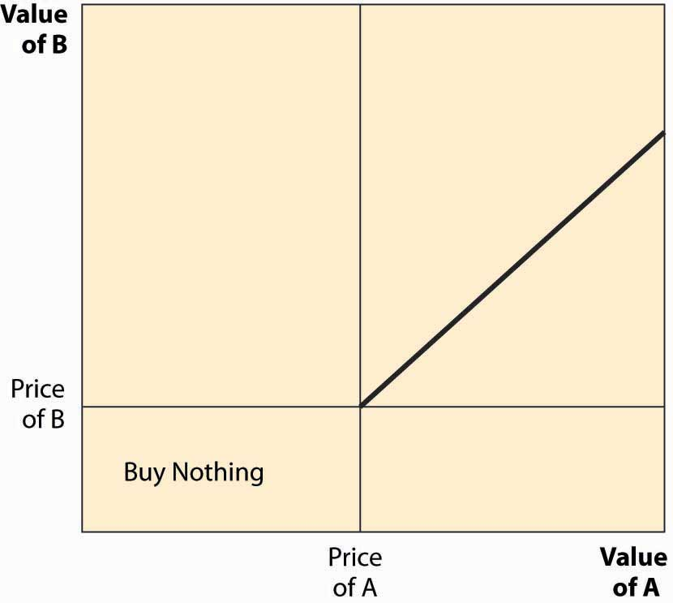
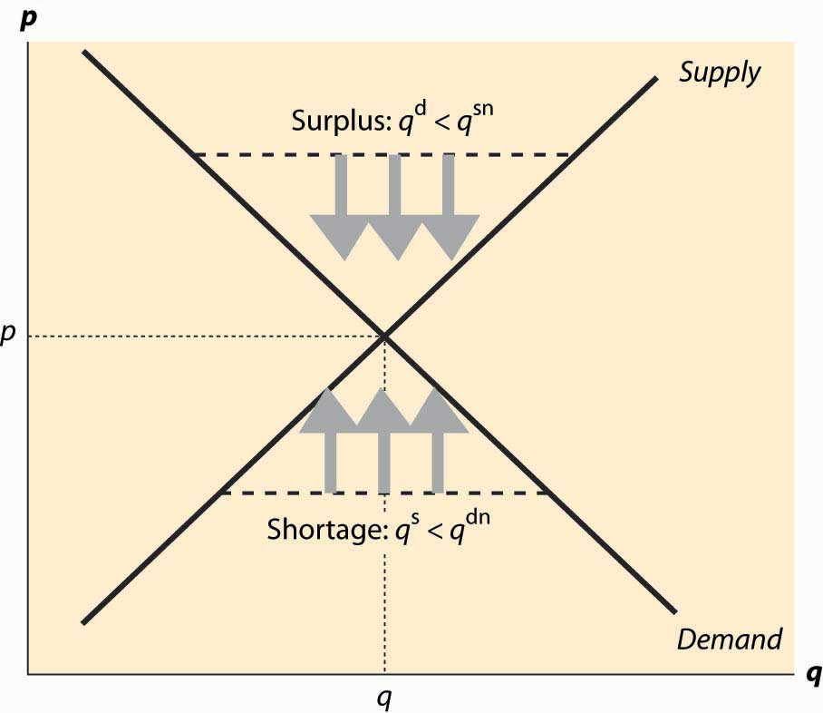
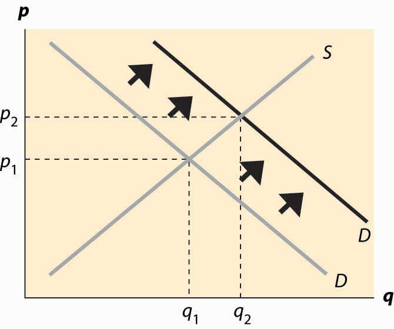
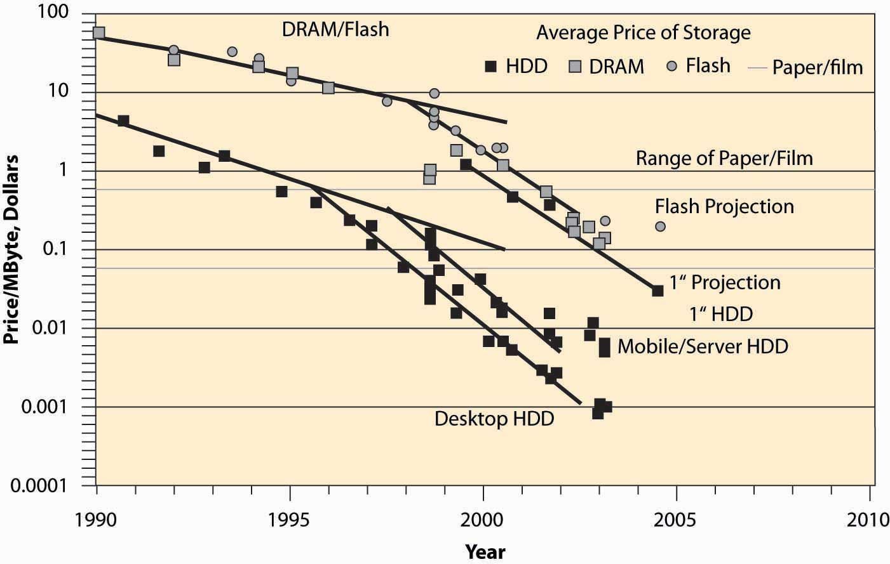

Supply and demand are the most fundamental tools of economic analysis. Most applications of economic reasoning involve supply and demand in one form or another. When prices for home heating oil rise in the winter, usually it is because the weather is colder than normal and, thus, demand is higher than usual. Similarly, a break in an oil pipeline creates a short-lived gasoline shortage, as occurred in the Midwest in 2000. The price of DRAM, or dynamic random access memory, used in personal computers, falls when new manufacturing facilities begin production, increasing the supply of memory.
This chapter sets out the basics of supply and demand, introduces equilibrium analysis, and considers some of the factors that influence supply and demand. Dynamics are not considered, however, until Chapter 4 "The U.S. Economy", which focuses on production; and Chapter 5 "Government Interventions" introduces a more fundamental analysis of demand, including a variety of topics such as risk. In essence, this is the economics “quickstart” guide to supply and demand, and we will look more deeply at these issues in the subsequent chapters.
Eating a french fry makes most people a little bit happier, and most people are willing to give up something of value—a small amount of money or a little bit of time—to eat one. The personal value of the french fry is measured by what one is willing to give up to eat it. That value, expressed in dollars, is the willingness to pay for french fries. So, if you are willing to give up 3 cents for a single french fry, your willingness to pay is 3 cents. If you pay a penny for the french fry, you’ve obtained a net of 2 cents in value. Those 2 cents—the difference between your willingness to pay and the amount you pay—is known as consumer surplusThe value of consuming a good, minus the price paid.. Consumer surplus is the value of consuming a good, minus the price paid.
The value of items—like french fries, eyeglasses, or violins—is not necessarily close to what one must pay for them. For people with bad vision, eyeglasses might be worth $10,000 or more in the sense that people would be willing to pay this amount or more to wear them. Since one doesn’t have to pay nearly this much for eyeglasses means that the consumer surplus derived from eyeglasses is enormous. Similarly, an order of french fries might be worth $3 to a consumer, but since they are available for $1, the consumer obtains a surplus of $2 from purchase.
How much is a second order of french fries worth? For most of us, the first order is worth more than the second one. If a second order is worth $2, we would still gain from buying it. Eating a third order of fries is worth less still, and at some point we’re unable or unwilling to eat any more fries even when they are free, that implies that the value of additional french fries becomes zero eventually.
We will measure consumption generally as units per period of time, for example, french fries consumed per month.
Many, but not all, goods have this feature of diminishing marginal valueCondition in which the value of the last unit declines as the number consumed rises.—the value of the last unit declines as the number consumed rises. If we consume a quantity q, that implies the marginal value, denoted by v(q), falls as the number of units rise.When marginal value falls, which may occur with beer consumption, constructing demand takes some additional effort, which isn’t a great deal of consequence. Buyers will still choose to buy a quantity where marginal value is decreasing. An example is illustrated in Figure 2.1 "The demand curve", where the value is a straight line, declining in the number of units.
Figure 2.1 The demand curve
Demand needn’t be a straight line, and indeed could be any downward-sloping curve. Contrary to the usual convention, the quantity demanded for any price is represented by the vertical axis whereas the price is plotted along the horizontal.
It is often important to distinguish the demand curve—the relationship between price and quantity demanded—from the quantity demanded. Typically, “demand” refers to the curve, while “quantity demanded” is a point on the curve.
For a price p, a consumer will buy units q such that v(q) > p since those units are worth more than they cost. Similarly, a consumer would not buy units for which v(q) < p. Thus, the quantity q0 that solves the equation v(q0) = p indicates the quantity the consumer will buy. This value is illustrated in Figure 2.1 "The demand curve".We will treat units as continuous, even though they are discrete units. This simplifies the mathematics; with discrete units, the consumer buys those units with value exceeding the price and doesn’t buy those with value less than the price, just as before. However, since the value function isn’t continuous, much less differentiable, it would be an accident for marginal value to equal price. It isn’t particularly difficult to accommodate discrete products, but it doesn’t enhance the model so we opt for the more convenient representation. Another way of expressing this insight is that the marginal value curve is the inverse of the demand function, where the demand function gives the quantity purchased at a given price. Formally, if x(p) is the quantity a consumer buys at price p, then
But what is the marginal value curve? Suppose the total value of consumption is u(q). A consumer who pays u(q) for the quantity q is indifferent to receiving nothing and paying nothing. For each quantity, there should exist one and only one price that makes the consumer indifferent between purchasing and receiving nothing. If the consumer is just willing to pay u(q), any additional amount exceeds what the consumer should be willing to pay.
The consumer facing price p receives consumer surplus of CS = u(q) – pq. In order to obtain the maximal benefit, the consumer chooses q to maximize u(q) – pq. When the function CS is maximized, its derivative is zero. This implies that the quantity maximizing the consumer surplus must satisfy
Thus, implying that the marginal value is the derivative of the total value.
Consumer surplus is the value of the consumption minus the amount paid, and it represents the net value of the purchase to the consumer. Formally, it is u(q) – pq. A graph of consumer surplus is generated by the following identity:
This expression shows that consumer surplus can be represented as the area below the demand curve and above the price, as illustrated in Figure 2.2 "Consumer surplus". The consumer surplus represents the consumer’s gains from trade, the value of consumption to the consumer net of the price paid.
Figure 2.2 Consumer surplus
The consumer surplus can also be expressed using the demand curve, by integrating from the price up to where the demand curve intersects with the price axis. In this case, if x(p) is demand, we have
When you buy your first car, you experience an increase in demand for gasoline because gasoline is pretty useful for cars and not so much for other things. An imminent hurricane increases the demand for plywood (to protect windows), batteries, candles, and bottled water. An increase in demand is represented by a movement of the entire curve to the northeast (up and to the right), which represents an increase in the marginal value v (movement up) for any given unit, or an increase in the number of units demanded for any given price (movement to the right). Figure 2.3 "An increase in demand" illustrates a shift in demand.
Similarly, the reverse movement represents a decrease in demand. The beauty of the connection between demand and marginal value is that an increase in demand could, in principle, have meant either more units demanded at a given price or a higher willingness to pay for each unit, but those are in fact the same concept. Both changes create a movement up and to the right.
For many goods, an increase in income increases the demand for the good. Porsche automobiles, yachts, and Beverly Hills homes are mostly purchased by people with high incomes. Few billionaires ride the bus. Economists aptly named goods whose demand doesn’t increase with income inferior goodsGoods whose demand don’t increase with income., with the idea that people substitute to better quality, more expensive goods as their incomes rise. When demand for a good increases with income, the good is called a normal goodGoods whose demand increases with income.. It would have been better to call such goods superior, but it is too late to change such a widely accepted convention.
Figure 2.3 An increase in demand
Another factor that influences demand is the price of related goods. The dramatic fall in the price of computers over the past 20 years has significantly increased the demand for printers, monitors, and Internet access. Such goods are examples of complementsFor a given good x, a good whose consumption increases the value of x.. Formally, for a given good x, a complement is a good whose consumption increases the value of x. Thus, the use of computers increases the value of peripheral devices like printers and monitors. The consumption of coffee increases the demand for cream for many people. Spaghetti and tomato sauce, national parks and hiking boots, air travel and hotel rooms, tables and chairs, movies and popcorn, bathing suits and sunscreen, candy and dentistry—all are examples of complements for most people. Consumption of one increases the value of the other. The complementary relationship is typically symmetric—if consumption of x increases the value of y, then consumption of y must increase the value of x.The basis for this insight can be seen by denoting the total value in dollars of consuming goods x and y as u(x, y). Then the demand for x is given by the partial The statement that y is a complement means that the demand for x rises as y increases; that is, But then with a continuous second derivative, , which means the demand for y, increases with x. From this we can predict that if the price of good y decreases, then the amount good y, a complementary good to x, will decline. Why, you may ask? The reason is that consumers will purchase more of good x when its price decreases. This will make good y more valuable, and hence consumers will also purchase more of good y as a result.
The opposite case of a complement is a substituteFor a given good x, a good whose consumption decreases the value of x.. For a given good x, a substitute is a good whose consumption decreases the value of x. Colas and root beer are substitutes, and a fall in the price of root beer (resulting in an increase in the consumption of root beer) will tend to decrease the demand for colas. Pasta and ramen, computers and typewriters, movies (in theaters) and sporting events, restaurants and dining at home, spring break in Florida versus spring break in Mexico, marijuana and beer, economics courses and psychology courses, driving and bicycling—these are all examples of substitutes for most people. An increase in the price of a substitute increases the demand for a good; and, conversely, a decrease in the price of a substitute decreases demand for a good. Thus, increased enforcement of the drug laws, which tends to increase the price of marijuana, leads to an increase in the demand for beer.
Much of demand is merely idiosyncratic to the individual—some people like plaids, some like solid colors. People like what they like. People often are influenced by others—tattoos are increasingly common, not because the price has fallen but because of an increased acceptance of body art. Popular clothing styles change, not because of income and prices but for other reasons. While there has been a modest attempt to link clothing style popularity to economic factors,Skirts are allegedly shorter during economic booms and lengthen during recessions. by and large there is no coherent theory determining fads and fashions beyond the observation that change is inevitable. As a result, this course, and economics generally, will accept preferences for what they are without questioning why people like what they like. While it may be interesting to understand the increasing social acceptance of tattoos, it is beyond the scope of this text and indeed beyond most, but not all, economic analyses. We will, however, account for some of the effects of the increasing acceptance of tattoos through changes in the number of parlors offering tattooing, changes in the variety of products offered, and so on.
Suppose the demand for wheat is given by qd = 3 – p and the supply of wheat is given by qs = 2p, where p is the price.
How will the following affect the price of a regular cup of coffee, and why?
| Slices of pizza | Total value |
|---|---|
| 0 | 0 |
| 1 | 4 |
| 2 | 7 |
| 3 | 10 |
| 4 | 12 |
| 5 | 11 |
The term supplyThe function that gives the quantity offered for sale as a function of price. refers to the function that gives the quantity offered for sale as a function of price. The supply curve gives the number of units that will be supplied on the horizontal axis, as a function of the price on the vertical axis; Figure 2.4 "The supply curve" illustrates a supply curve. Generally, supply is upward sloping, because if it is a good deal for a supplier to sell 50 units of a product at a price of $10, then it is an even better deal to supply those same 50 at a price of $11. The seller might choose to sell more than 50, but if the first 50 aren’t worth keeping at a price of $10, then it remains true at $11.This is a good point at which to remind the reader that the economists’ familiar assumption of “other things equal” is still in effect. If the increased price is an indication that prices might rise still further, or a consequence of some other change that affects the seller’s value of items, then of course the higher price might not justify sale of the items. We hold other things equal to focus on the effects of price alone, and then will consider other changes separately. The pure effect of an increased price should be to increase the quantity offered, while the effect of increased expectations may be to decrease the quantity offered.
The seller with cost c(q) of selling q units obtains a profit, at price p per unit, of pq – c(q). The quantity that maximizes profit for the seller is the quantity q* satisfying
Thus, “price equals marginal cost” is a characteristic of profit maximization; the supplier sells all the units whose cost is less than price, and doesn’t sell the units whose cost exceeds price. In constructing the demand curve, we saw that it was the inverse of the marginal value. There is an analogous property of supply: The supply curve is the inverse function of marginal cost. Graphed with the quantity supplied on the horizontal axis and price on the vertical axis, the supply curve is the marginal cost curve, with marginal cost on the vertical axis.
Figure 2.4 The supply curve

Analogous to consumer surplus with demand, profit is given by the difference of the price and marginal cost.
This area is shaded in Figure 2.5 "Supplier profits".
The relationship of demand and marginal value exactly parallels the relationship of supply and marginal cost, for a somewhat hidden reason. Supply is just negative demand; that is, a supplier is just the possessor of a good who doesn’t keep it but instead, offers it to the market for sale. For example, when the price of housing goes up, one of the ways people demand less is by offering to rent a room in their house—that is, by supplying some of their housing to the market. Similarly, the marginal cost of supplying a good already produced is the loss of not having the good—that is, the marginal value of the good. Thus, with exchange, it is possible to provide the theory of supply and demand entirely as a theory of net demand, where sellers are negative demanders. There is some mathematical economy in this approach, and it fits certain circumstances better than separating supply and demand. For example, when the price of electricity rose very high in the western United States in 2003, several aluminum smelters resold electricity that they had purchased in long-term contracts; in other words, demanders became suppliers.
Figure 2.5 Supplier profits

However, the “net demand” approach obscures the likely outcomes in instances where the sellers are mostly distinct from the buyers. Moreover, while there is a theory of complements and substitutes for supply that is exactly parallel to the equivalent theory for demand, the nature of these complements and substitutes tends to be different. For these reasons, and also for the purpose of being consistent with common economic usage, we will distinguish supply and demand.
Figure 2.6 An increase in supply

An increase in supply refers to either more units available at a given price or a lower price for the supply of the same number of units. Thus, an increase in supply is graphically represented by a curve that is lower or to the right, or both—that is, to the southeast. This is illustrated in Figure 2.6 "An increase in supply". A decrease in supply is the reverse case, a shift to the northwest.
Anything that increases costs of production will tend to increase marginal cost and thus reduce the supply. For example, as wages rise, the supply of goods and services is reduced because wages are the input price of labor. Labor accounts for about two thirds of all input costs, and thus wage increases create supply reductions (a higher price is necessary to provide the same quantity) for most goods and services. Costs of materials, of course, increase the price of goods using those materials. For example, the most important input into the manufacture of gasoline is crude oil, and an increase of $1 in the price of a 42-gallon barrel of oil increases the price of gasoline about 2 cents—almost one-for-one by volume. Another significant input in many industries is capital and, as we will see, interest is the cost of capital. Thus, increases in interest rates increase the cost of production, and thus tend to decrease the supply of goods.
Analogous to complements in demand, a complement in supply to a good x is a good y such that an increase in the production of y increases the supply of x. In demand, a complement in supplyA good whose cost falls as the amount produced of another good rises. is a good whose cost falls as the amount produced of another good rises. Complements in supply are usually goods that are jointly produced. In producing lumber (sawn boards), a large quantity of wood chips and sawdust are also produced as a by-product. These wood chips and sawdust are useful in the manufacture of paper. An increase in the price of lumber tends to increase the quantity of trees sawn into boards, thereby increasing the supply of wood chips. Thus, lumber and wood chips are complements in supply.
It turns out that copper and gold are often found in the same kinds of rock—the conditions that give rise to gold compounds also give rise to copper compounds. Thus, an increase in the price of gold tends to increase the number of people prospecting for gold and, in the process, increases not just the quantity of gold supplied to the market but also the quantity of copper. Thus, copper and gold are complements in supply.
The classic supply–complement is beef and leather—an increase in the price of beef increases the slaughter of cows, thereby increasing the supply of leather.
The opposite of a complement in supply is a substitute in supplyA good whose cost rises as the amount produced of another good rises.. This is a good whose cost rises as the amount produced of another good rises. Military and civilian aircraft are substitutes in supply—an increase in the price of military aircraft will tend to divert resources used in the manufacture of aircraft toward military aircraft and away from civilian aircraft, thus reducing the supply of civilian aircraft. Wheat and corn are also substitutes in supply. An increase in the price of wheat will lead farmers whose land is well suited to producing either wheat or corn to substitute wheat for corn, thus increasing the quantity of wheat and decreasing the quantity of corn. Agricultural goods grown on the same type of land are usually substitutes. Similarly, cars and trucks, tables and desks, sweaters and sweatshirts, horror movies and romantic comedies are all examples of substitutes in supply.
Complements and substitutes are important because they are common and have predictable effects on demand and supply. Changes in one market spill over to the other market through the mechanism of complements or substitutes.
An owner of an oil well has two technologies for extracting oil. With one technology, the oil can be pumped out and transported for $5,000 per day, and 1,000 barrels per day are produced. With the other technology, which involves injecting natural gas into the well, the owner spends $10,000 per day and $5 per barrel produced, but 2,000 barrels per day are produced. What is the supply? Graph it.
(Hint: Compute the profits, as a function of the price, for each of the technologies. At what price would the producer switch from one technology to the other? At what price would the producer shut down and spend nothing?)
An entrepreneur has a factory that produces Lα widgets, where α < 1, when L hours of labor are used. The cost of labor (wage and benefits) is w per hour. If the entrepreneur maximizes profit, what is the supply curve for widgets?
(Hint: The entrepreneur’s profit, as a function of the price, is pLα—wL. The entrepreneur chooses the amount of labor to maximize profit. Find the amount of labor that maximizes profit, which is a function of p, w, and α. The supply is the amount of output produced, which is Lα.)
In the above exercise, suppose now that more than 40 hours entails a higher cost of labor (overtime pay). Let w be $20/hr for under 40 hours, and $30/hr for each hour over 40 hours, and α = ½. Find the supply curve.
(Hint: Let L(w, p) be the labor demand when the wage is w (no overtime pay) and the price is p. Now show that, if L(20, p) < 40, the entrepreneur uses L(20, p) hours. This is shown by verifying that profits are higher at L(20, p) than at L(30, p). If L(30, p) > 40, the entrepreneur uses L(30, p) hours. Finally, if L(20, p) > 40 > L(30, p), the entrepreneur uses 40 hours. Labor translates into supply via Lα.)
In the previous exercise, for what range of prices does employment equal 40 hours? Graph the labor demanded by the entrepreneur.
(Hint: The answer involves )
Individuals with their own supply or demand trade in a market, where prices are determined. Markets can be specific or virtual locations—the farmers’ market, the New York Stock Exchange, eBay—or may be an informal or more amorphous market, such as the market for restaurant meals in Billings, Montana, or the market for roof repair in Schenectady, New York.
Figure 2.7 Market demand
Individual demand gives the quantity purchased for each price. Analogously, the market demandThe quantity purchased by all market participants for each price. gives the quantity purchased by all the market participants—the sum of the individual demands—for each price. This is sometimes called a “horizontal sum” because the summation is over the quantities for each price. An example is illustrated in Figure 2.7 "Market demand". For a given price p, the quantity q1 demanded by one consumer and the quantity q2 demanded by a second consumer are illustrated. The sum of these quantities represents the market demand if the market has just those two participants. Since the consumer with subscript 2 has a positive quantity demanded for high prices, while the consumer with subscript 1 does not, the market demand coincides with consumer 2’s demand when the price is sufficiently high. As the price falls, consumer 1 begins purchasing, and the market quantity demanded is larger than either individual participant’s quantity and is the sum of the two quantities.
Example: If the demand of Buyer 1 is given by q = max {0, 10 – p}, and the demand of Buyer 2 is given by q = max {0, 20 – 4p}, what is market demand for the two participants?
Solution: First, note that Buyer 1 buys zero at a price of 10 or higher, while Buyer 2 buys zero at a price of 5 or higher. For a price above 10, market demand is zero. For a price between 5 and 10, market demand is Buyer 1’s demand, or 10 – p. Finally, for a price between zero and 5, the market quantity demanded is 10 – p + 20 – 4p = 30 – 5p.
Market supplyThe sum of all the individual supply curves for all market participants. is similarly constructed—the market supply is the horizontal (quantity) sum of all the individual supply curves.
Example: If the supply of Firm 1 is given by q = 2p, and the supply of Firm 2 is given by q = max {0, 5p – 10}, what is market supply for the two participants?
Solution: First, note that Firm 1 is in the market at any price, but Firm 2 is in the market only if price exceeds 2. Thus, for a price between zero and 2, market supply is Firm 1’s supply, or 2p. For p > 2, market supply is 5p – 10 + 2p = 7p – 10.
Figure 2.8
Economists use the term equilibrium in the same way that the word is used in physics: to represent a steady state in which opposing forces are balanced so that the current state of the system tends to persist. In the context of supply and demand, equilibriumCondition that occurs when the pressure for higher prices is balanced by the pressure for lower prices so that the current rate of exchange between buyers and sellers persists. occurs when the pressure for higher prices is balanced by the pressure for lower prices, and so that rate of exchange between buyers and sellers persists.
When the current price is above the equilibrium price, the quantity supplied exceeds the quantity demanded, and some suppliers are unable to sell their goods because fewer units are purchased than are supplied. This condition, where the quantity supplied exceeds the quantity demanded, is called a surplusCondition in which the quantity supplied exceeds the quantity demanded.. The suppliers failing to sell have an incentive to offer their good at a slightly lower price—a penny less—to make a sale. Consequently, when there is a surplus, suppliers push prices down to increase sales. In the process, the fall in prices reduces the quantity supplied and increases the quantity demanded, thus eventually eliminating the surplus. That is, a surplus encourages price-cutting, which reduces the surplus, a process that ends only when the quantity supplied equals the quantity demanded.
Similarly, when the current price is lower than the equilibrium price, the quantity demanded exceeds the quantity supplied, and a shortageCondition in which the quantity demanded exceeds the quantity supplied. exists. In this case, some buyers fail to purchase, and these buyers have an incentive to offer a slightly higher price to make their desired purchase. Sellers are pleased to receive higher prices, which tends to put upward pressure on the price. The increase in price reduces the quantity demanded and increases the quantity supplied, thereby eliminating the shortage. Again, these adjustments in price persist until the quantity supplied equals the quantity demanded.
Figure 2.9 Equilibration
This logic, which is illustrated in Figure 2.9 "Equilibration", justifies the conclusion that the only equilibrium price is the price at which the quantity supplied equals the quantity demanded. Any other price will tend to rise in a shortage, or fall in a surplus, until supply and demand are balanced. In Figure 2.9 "Equilibration", a surplus arises at any price above the equilibrium price p*, because the quantity supplied qs is larger than the quantity demanded qd. The effect of the surplus—leading to sellers with excess inventory—induces price-cutting, which is illustrated using three arrows pointing down.
Similarly, when the price is below p*, the quantity supplied qs is less than the quantity demanded qd. This causes some buyers to fail to find goods, leading to higher asking prices and higher bid prices by buyers. The tendency for the price to rise is illustrated using three arrows pointing up. The only price that doesn’t lead to price changes is p*, the equilibrium price in which the quantity supplied equals the quantity demanded.
The logic of equilibrium in supply and demand is played out daily in markets all over the world—from stock, bond, and commodity markets with traders yelling to buy or sell, to Barcelona fish markets where an auctioneer helps the market find a price, to Istanbul’s gold markets, to Los Angeles’s real estate markets.
The equilibrium of supply and demand balances the quantity demanded and the quantity supplied so that there is no excess of either. Would it be desirable, from a social perspective, to force more trade or to restrain trade below this level?
There are circumstances where the equilibrium level of trade has harmful consequences, and such circumstances are considered in the chapter on externalities. However, provided that the only people affected by a transaction are the buyer and the seller, the equilibrium of supply and demand maximizes the total gains from trade.
This proposition is quite easy to see. To maximize the gains from trade, clearly the highest value buyers must get the goods. Otherwise, if a buyer that values the good less gets it over a buyer who values it more, then gains can arise from them trading. Similarly, the lowest-cost sellers must supply those goods; otherwise we can increase the gains from trade by replacing a higher-cost seller with a lower-cost seller. Thus, the only question is how many goods should be traded to maximize the gains from trade, since it will involve the lowest-cost suppliers selling to the highest-value buyers. Adding a trade increases the total gains from trade when that trade involves a buyer with value higher than the seller’s cost. Thus, the gains from trade are maximized by the set of transactions to the left of the equilibrium, with the high-value buyers buying from the low-cost sellers.
In the economist’s language, the equilibrium is efficientMaximizing the gains from trade under the assumption that the only people affected by any given transaction are the buyers and the seller. in that it maximizes the gains from trade under the assumption that the only people affected by any given transaction are the buyers and the seller.
What are the effects of an increase in demand? As the population of California has grown, the demand for housing has risen. This has pushed the price of housing up and also spurred additional development, increasing the quantity of housing supplied as well. We see such a demand increase illustrated in Figure 2.10 "An increase in demand", which represents an increase in the demand. In this figure, supply and demand have been abbreviated S and D. Demand starts at D1 and is increased to D2. Supply remains the same. The equilibrium price increases from p1* to p2*, and the quantity rises from q1* to q2*.
Figure 2.10 An increase in demand
A decrease in demand—which occurred for typewriters with the advent of computers, or buggy whips as cars replaced horses as the major method of transportation—has the reverse effect of an increase and implies a fall in both the price and the quantity traded. Examples of decreases in demand include products replaced by other products—VHS tapes were replaced by DVDs, vinyl records were replaced by CDs, cassette tapes were replaced by CDs, floppy disks (oddly named because the 1.44 MB “floppy,” a physically hard product, replaced the 720 KB, 5 ¼-inch soft floppy disk) were replaced by CDs and flash memory drives, and so on. Even personal computers experienced a fall in demand as the market was saturated in 2001.
An increase in supply comes about from a fall in the marginal cost: recall that the supply curve is just the marginal cost of production. Consequently, an increased supply is represented by a curve that is lower and to the right on the supply–demand graph, which is an endless source of confusion for many students. The reasoning—lower costs and greater supply are the same thing—is too easily forgotten. The effects of an increase in supply are illustrated in Figure 2.11 "An increase in supply". The supply curve goes from S1 to S2, which represents a lower marginal cost. In this case, the quantity traded rises from q1* to q2* and price falls from p1* to p2*.
Figure 2.11 An increase in supply

Computer equipment provides dramatic examples of increases in supply. Consider dynamic random access memory (DRAM). DRAMs are the chips in computers and many other devices that store information on a temporary basis.Information that will be stored on a long-term basis is generally embedded in flash memory or on a hard disk. Neither of these products loses its information when power is turned off, unlike DRAM. Their cost has fallen dramatically, which is illustrated in Figure 2.12 "Price of storage".Used with permission of computer storage expert, Dr. Edward Grochowski. Note that the prices in this figure reflect a logarithmic scale, so that a fixed-percentage decrease is illustrated by a straight line. Prices of DRAMs fell to close to 1/1,000 of their 1990 level by 2004. The means by which these prices have fallen are themselves quite interesting. The main reasons are shrinking the size of the chip (a “die shrink”), so that more chips fit on each silicon disk, and increasing the size of the disk itself, so again more chips fit on a disk. The combination of these two, each of which required solutions to thousands of engineering and chemistry problems, has led to dramatic reductions in marginal costs and consequent increases in supply. The effect has been that prices fell dramatically and quantities traded rose dramatically.
An important source of supply and demand changes can be found in the markets of complements. A decrease in the price of a demand–complement increases the demand for a product; and, similarly, an increase in the price of a demand–substitute increases the demand for a product. This gives two mechanisms to trace through effects from external markets to a particular market via the linkage of demand substitutes or complements. For example, when the price of gasoline falls, the demand for automobiles (a complement) should increase overall. As the price of automobiles rises, the demand for bicycles (a substitute in some circumstances) should rise. When the price of computers falls, the demand for operating systems (a complement) should rise. This gives an operating system seller like Microsoft an incentive to encourage technical progress in the computer market in order to make the operating system more valuable.
Figure 2.12 Price of storage
An increase in the price of a supply–substitute reduces the supply of a product (by making the alternative good more attractive to suppliers); and, similarly, a decrease in the price of a supply-complement reduces the supply of a good. By making the by-product less valuable, the returns to investing in a good are reduced. Thus, an increase in the price of DVD-R disks (used for recording DVDs) discourages investment in the manufacture of CD-R disks, which are a substitute in supply, leading to a decrease in the supply of CD-Rs. This tends to increase the price of CD-Rs, other things equal. Similarly, an increase in the price of oil increases exploration for oil, which increases the supply of natural gas, which is a complement in supply. However, since natural gas is also a demand substitute for oil (both are used for heating homes), an increase in the price of oil also tends to increase the demand for natural gas. Thus, an increase in the price of oil increases both the demand and the supply of natural gas. Both changes increase the quantity traded, but the increase in demand tends to increase the price, while the increase in supply tends to decrease the price. Without knowing more, it is impossible to determine whether the net effect is an increase or decrease in the price.
When the price of gasoline goes up, people curtail their driving to some extent but don’t immediately scrap their SUVs to buy more fuel-efficient automobiles or electric cars. Similarly, when the price of electricity rises, people don’t immediately replace their air conditioners and refrigerators with the most modern, energy-saving ones. There are three significant issues raised by this kind of example. First, such changes may be transitory or permanent, and people react differently to temporary changes than to permanent changes. Second, energy is a modest portion of the cost of owning and operating an automobile or refrigerator, so it doesn’t make sense to scrap a large capital investment over a small permanent increase in cost. Thus, people rationally continue to operate “obsolete” devices until their useful life is over, even when they wouldn’t buy an exact copy of that device. This situation, in which past choices influence current decisions, is called hysteresisSituation in which past choices influence current decisions.. Third, a permanent increase in energy prices leads people to buy more fuel-efficient cars and to replace their old gas-guzzlers more quickly. That is, the effects of a change are larger over a time period long enough that all inputs can be changed (which economists call the long runTime period long enough that all inputs can be changed.) than over a shorter time interval where not all inputs can be changed, or the short runTime interval in which not all inputs can be changed..
A striking example of such delays arose when oil quadrupled in price in 1973 and 1974, caused by a reduction in sales by the cartel of oil-producing nations, OPEC, which stands for the Organization of Petroleum Exporting Countries. The increased price of oil (and consequent increase in gasoline prices) caused people to drive less and to lower their thermostats in the winter, thus reducing the quantity of oil demanded. Over time, however, they bought more fuel-efficient cars and insulated their homes more effectively, significantly reducing the quantity demanded still further. At the same time, the increased prices for oil attracted new investments into oil production in Alaska, the North Sea between Britain and Norway, Mexico, and other areas. Both of these effects (long-run substitution away from energy and long-run supply expansion) caused the price to fall over the longer term, undoing the supply reduction created by OPEC. In 1981, OPEC further reduced output, sending prices still higher; but again, additional investments in production, combined with energy-saving investments, reduced prices until they fell back to 1973 levels (adjusted for inflation) in 1986. Prices continued to fall until 1990 (reaching an all-time low level) when Iraq’s invasion of Kuwait and the resulting first Iraqi war sent them higher again.
Short-run and long-run effects represent a theme of economics, with the major conclusion of the theme being that substitution doesn’t occur instantaneously, which leads to predictable patterns of prices and quantities over time.
It turns out that direct estimates of demand and supply are less useful as quantifications than notions of percentage changes, which have the advantage of being unit-free. This observation gives rise to the concept of elasticity, the next topic.